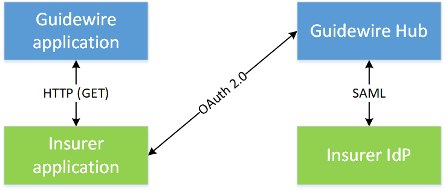

Guidewire authentication and authorization
Guidewire must control access to its applications and data. When a user tries to access a Guidewire resource, the user must be authenticated, and then verified to be authorized to access that resource. Authentication and authorization (together often called auth) is a common requirement for cloud applications, and there are many products available that provide these services.
The Guidewire Identity Federation Hub (Guidewire Hub) is an auth server that uses OAuth 2.0 and SAML for identity management services. Guidewire Hub is the trusted auth server for all Guidewire cloud applications, including client applications that you create that access Guidewire cloud resources.

To enable Guidewire Hub to use your IdP, you must have your IdP registered with the Guidewire Hub. In addition, if you want to use your own client application to access Guidewire resources, you must register your application.
Register your identity provider (IdP)
Registering your IdP with Guidewire allows your organization to use Guidewire Hub for auth functions.
- Ensure that you have an operational SAML-based IdP.
- Contact your Guidewire Services representative to register your IdP.
- idp_id
- The ID of your IdP. You will use this ID when issuing requests to the Guidewire Hub.
- tenant_id
- The ID of your organization. You will use this ID when registering Guidewire applications with Guidewire Hub.
Register your InsuranceSuite applications
Registering allows your Guidewire InsuranceSuite applications to use Guidewire Hub for auth functions.
You will likely use multiple environments for your Guidewire application. For example, you might have a staging environment and a production environment. You must register each application for each environment separately.